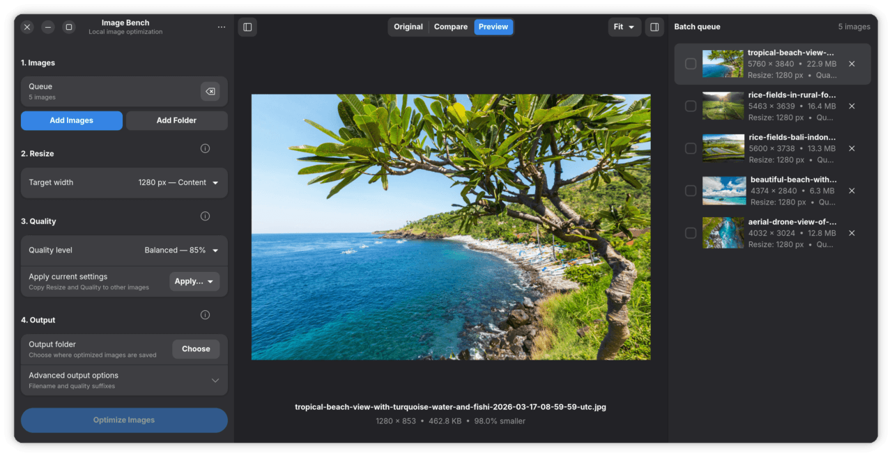

01
Work in batches
Add individual images or a complete folder and keep an eye on each item in the queue.
Image Bench · v0.9.0
A native GNOME utility for preparing batches of JPEG and PNG images without sending them to a third-party service.

Overview
Image Bench keeps the common steps together: add images or a folder, choose a target size and quality, inspect the result, then export when it looks right.
Files stay on your computer throughout the process. Resize presets preserve the original aspect ratio and smaller source images are not enlarged.
01
Add individual images or a complete folder and keep an eye on each item in the queue.
02
Start with practical resize and quality profiles, then adjust individual images when needed.
03
Move between Original, Compare and Preview views before writing optimized files.
Workflow
The movable split view makes compression choices visible. It is there to help answer a simple question: is the smaller file still the image you want?
Details
Download
Download the Flatpak bundle and open it with a Flatpak-capable software installer.
SHA-256
f7e4d9d67010e7972335ac92fa834d9a07048b733276677a434c99e0f86ba5bb